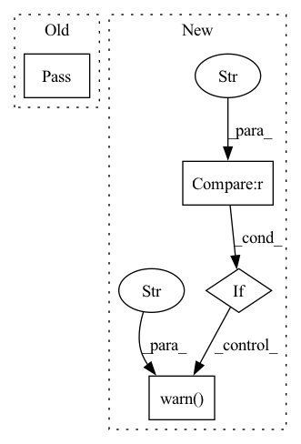

Pattern ID :29853
Before Change
except: // noqa: E722
// Maybe it"s possible to remove this – mostly worried about cross-
// platform and cross-Python copmpatibility here
pass
def get_json(url, desc):
r = requests.get(url)After Change
can be shortcut, model name or, if --direct flag is set, full model name
with version. For direct downloads, the compatibility check will be skipped.
if not require_package("spacy") and "--no-deps" not in pip_args :
msg.warn(
"Skipping model package dependencies and setting `--no-deps`. "
"You don"t seem to have the spaCy package itself installed "
"(maybe because you"ve built from source?), so installing the "
"model dependencies would cause spaCy to be downloaded, which "
"probably isn"t what you want. If the model package has other "
"dependencies, you"ll have to install them manually."
)
pip_args = pip_args + ("--no-deps",)
dl_tpl = "{m}-{v}/{m}-{v}.tar.gz//egg={m}=={v}"
if direct:
components = model.split("-")In pattern: SUPERPATTERN
Frequency: 3
Non-data size: 4
Instances Fragment ID: 88342860
Project Name: explosion/spaCy
Commit Name: a84025d70b276df3a84b31b024525c51c04f53cf
Time: 2019-09-16
Author: ines@ines.io
File Name: spacy/cli/download.py
M Class Name: AnonimousClass
N Class Name: AnonimousClass
M Method Name: download(2)
N Method Name: download(2)
M Parent Class:
N Parent Class:
M File Name: spacy/cli/download.py
N File Name: spacy/cli/download.py
M Start Line: 39
M End Line: 82
N Start Line: 31
N End Line: 85
Before Change
Prepare model for serialization (optional).
// Keras supports serialization natively.
// https://github.com/keras-team/keras/pull/14748.
pass
@staticmethod
def get_tensor_dict(model, optimizer=None, suffix=""):
After Change
cls.__reduce__ = __reduce__
// Run the function
if tf.__version__ <= "2.7.1" :
logger.warn(f"Applying hotfix for model serialization."
"Please consider updating to tensorflow>=2.8 to silence this warning." )
make_keras_picklable()
@staticmethod
def get_tensor_dict(model, optimizer=None, suffix=""): Fragment ID: 88342861
Project Name: intel/openfl
Commit Name: 0cedc93ac6ad002208ac574d60bf4a7fd0adeb29
Time: 2022-06-27
Author: 77758170+mansishr@users.noreply.github.com
File Name: openfl/plugins/frameworks_adapters/keras_adapter.py
M Class Name: FrameworkAdapterPlugin
N Class Name: FrameworkAdapterPlugin
M Method Name: serialization_setup(0)
N Method Name: serialization_setup(0)
M Parent Class: FrameworkAdapterPluginInterface
N Parent Class: FrameworkAdapterPluginInterface
M File Name: openfl/plugins/frameworks_adapters/keras_adapter.py
N File Name: openfl/plugins/frameworks_adapters/keras_adapter.py
M Start Line: 19
M End Line: 19
N Start Line: 52
N End Line: 57
Before Change
def is_in(self, other): pass
def pad(self): pass
def shift(self): pass
def scale(self): passAfter Change
def pad(self, left=0, right=0, top=0, bottom=0, safe_mode=True):
if self.axis == "x" :
start = self.start - left
end = self.end + right
if top or bottom:
warnings.warn(f"Invalid padding top/bottom for an x axis {self.__class__.__name__}" )
else:
start = self.start - top
end = self.end + bottom
if left or right: Fragment ID: 88342862
Project Name: layout-parser/layout-parser
Commit Name: 2dc499104b1587b962f990dc470aa20f99e49272
Time: 2020-06-13
Author: 22512825+lolipopshock@users.noreply.github.com
File Name: src/layoutparser/elements.py
M Class Name: Interval
N Class Name: Interval
M Method Name: pad(6)
N Method Name: pad(1)
M Parent Class: BaseLayoutElement
N Parent Class: BaseLayoutElement
M File Name: src/layoutparser/elements.py
N File Name: src/layoutparser/elements.py
M Start Line: 128
M End Line: 128
N Start Line: 129
N End Line: 146